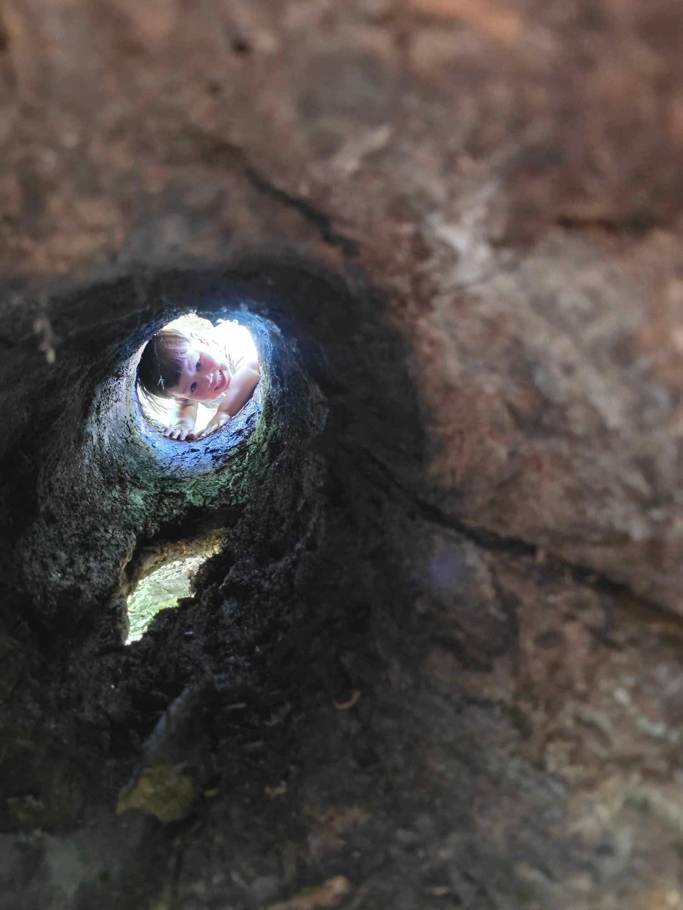

Frequently Asked Questions
Common questions about our forest school programs.

We serve children of all ages, from toddlers (Sprouts) to teenagers (Nature Navigators). See our Sessions page for specific age groups.
No. We are a hiking and play group with a focus on nature education and outdoor exploration.
Yes. Parents get to socialize and share in the delight while we watch our kids learn, play, and grow together.
Start with our family intake form to visit or become a member. You can also check our Facebook group for the latest session updates.